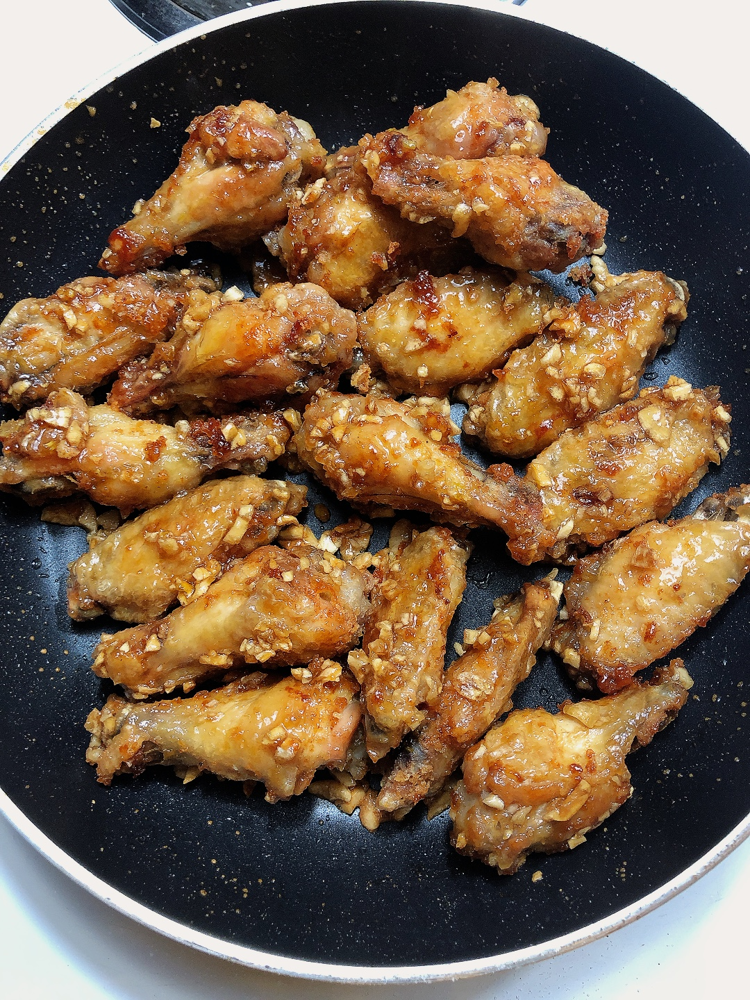

Ga Chien Nuoc Mam

Fried chicken wings with a sweet and salty sticky garlic and fish sauce glaze.
This recipe finds its origins in Vietnam where fish sauce is used in virtually every dish. Ga Chien Nuoc Mam
incorporates complex flavors that comes from mixing pungent fish sauce with sugar and minced garlic. This dish
pairs perfectly with a bowl of steaming white rice.
Now, as most recipe sites do to keep you from seeing the real recipe, I'm going to tell you about my personal
connection to this perfect dish.
Just kidding. I'm not doing that to you.
Ingredients
- Chicken wings
- Garlic
- Sugar
- Fish sauce
- Water
- Oil
Steps
- Mince garlic and set aside.
- If you want to add shallots, you can mince them too.
- Pat your chicken dry.
- Turn your stove onto medium heat and add enough oil to fry. Once the oil is hot, add in a bit of corn starch
and stir that into the oil.
- This is so that there is less popping once you fry the chicken! It also coats the chicken nicely.
- Put your chicken in and fry them until both sides are golden.
- In a separate pot, put in a bit of oil to cook garlic until golden.
- Add in minced shallots if you are using them.
- Once garlic is golden, turn off the heat and add in 2 large spoons of fish sauce, 1 large spoon of sugar,
and 1 large spoon of water.
- A tiny bit of MSG can be added for more flavor.
- Turn the heat back on and stir everything until fully mixed.
- Add the fried chicken into the sauce and toss to mix.
- Plate and eat with a side of white rice!
Congrats! You did it!!!
Now go check out another recipe below.